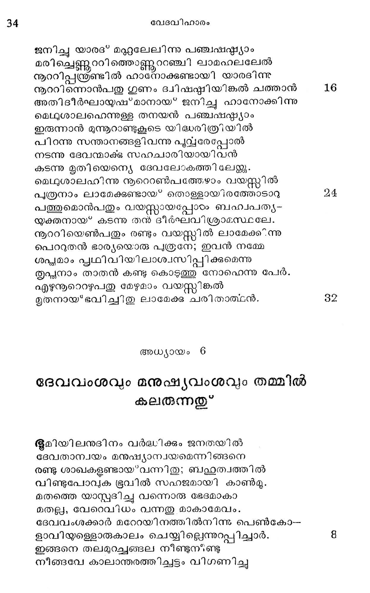
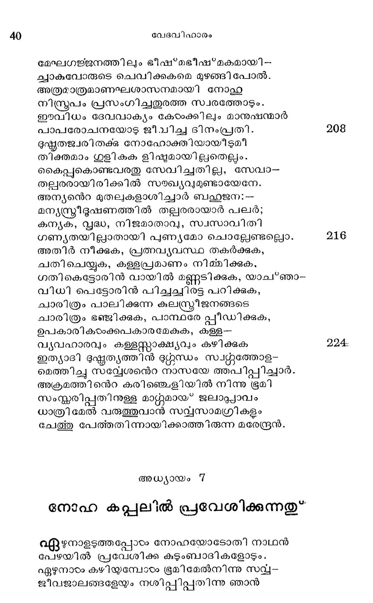

ദേവവംശവും മനുഷ്യവംശവും തമ്മിൽ കലരുന്നതു*
ഭൂമിയിലനുദിനം വര്ദ്ധിക്കും ജനതയില്
ദേവതാന്വയം മനുഷ്യാന്വയമെന്നിങ്ങനെ
രണ്ടു ശാഖകളണ്ടായ*വന്നിതു; ബഹ്വത്വത്തില്
വിണ്ടുപോവുക ഭൂവില് സഹജമായി കാണ്മൂ.
മതത്തെ യാസ്റ്വദിച്ച വന്നൊരു ഭേദമാകാ
മതല്ല, വേറെവിധം വന്നതു മാകാമേവം.
ദേവവംശക്കാര് മറേറയിനത്തില്നിന്നു പെണ്കോ-
ളാവിയുളെളാരുകാലം ചെയ്യില്ലെന്നുറ്പിച്ചാര്.
ഇങ്ങനെ തലമുറച്ചങ്ങല നീണ്ടുന്ണ്ടു
നീങ്ങവേ കാലാന്തരത്തിച്ചട്ടം വിഗണിച്ചു

മാനവവംശത്തിലെ ചാരുത വഴിഞ്ഞുള്ള
മാനിനീമണികളെ ദേവതാന്വയവീരര്
മീനകേതനശരപീഡനം പ്രമാണിച്ചു
മാനമെന്നിയെ പാണിപീഡനം നടത്തിനാര്.
ഈദൃശം കുലത്തിന്നു സാങ്കര്യം ഭവിച്ചതാല്
മേദിനി വിപത്തിന്െറ കയ്യിലെക്കളിക്കോപ്പായ*
സങ്കരവിവാഹത്താല് പ്രാചീനകാലങ്ങളിൽല്
വന്കോടംവിയ്ളളതായ *നെഫിലിം? ജാതിയണ്ടായ*
അക്രമക്രിയന്ത്കി വര് കൈകണ്ട സമത്ഥന്മാർ
എക്കിടയിലും ചെന്നു ദുഷ*കൃതംവളത്തിടും.,
അധമ്മവിത്തു മുളയ്ക്കാതുള്ള മരുവിലും
കുധമ്മപ്രഥരിവര് വിതച്ചു കൊയ്തുകൊള്ളം.
കുടിക്കാത്തവരേയും കുടിപ്പിച്ചിടും ശണ്ണ
പിടിക്കാത്തവരേയും പിടിക്കാന് പഠിപ്പിക്കും.
ആരെയും പീഡിപ്പതിലിവര്ക്ക ഭയമില്ല
നാരികാഠം ജരംന്മാരിത്യാദി ഭേദമില്ല,
ഭുന്നടത്തകയാക്കെല്ലാം പ്രസ്ൃത്തി പെരുതായി
ഭുന്നയമല്ലാതൊന്നും നാട്ടിലില്ലെന്നു വന്നു.
ധമ്മമെന്നുള്ള ശബ്ദമെങ്ങുമേ കോടംപ്പാനില്ല.
ശമ്മത്തിന്മുരടിനും പുഴുക്കുത്തുണ്ടായപ്പോരം
മുക്കിലോ ദൂലയിലോ കുത്തിവയ്ക്കാരംഭിച്ച.
ഭിക്കശേഷവുമായ ഗോവനസുരിയേപ്പോലെ
നെഫിലി കൂട്ടരാദ്യം തുടന്ന ദുഷ്ണമ്മങ്ങഠം
വിഫലമാകാതെങ്ങും വിജയക്കൊടി നാട്ടി.
മനുഷ്യവറ്്ത്തിന്െറ ചിന്തയും പ്രസ്തത്തിയും
പെരുത്തു ദുഷ്ടടമന്നു കണ്ടതുമുലം ദേവന്
അവരേ സൃഷ്ടിച്ചതില് സന്തപ്യമാനസനാ--
യുരചെയ്യേവം; മമ വാത്സല്യം മനുഷ്യരില്
സ്ഥിതിചെയ്തില്ല മേലാല് താമസരത്രേയവര്
ഫഹതിചെയ്തീടുമവര് വശ്ശധത്തെ ഞതല്ക്കാരണാൽ.
നൂറിനോടിരുപതു വത്സരമവര് മനം
മാറുവാനനുവദിച്ചീടുന്നു കരുണയാ.
കൂറുകേടവരതില് കാണിക്കുമെങ്കില് പുന--
രാറുപോലൊഴുകിടും ദണ്ഡനമവര് മീതെ
മര്ത്യനും മുഗങ്ങളം പക്ഷിയ മിഴജാതി
യിത്തരം പ്രാണിവര്ഗ്ഗുമൊക്കവേ ഭൂവില്നിന്നു
നിശ്ചയം നിമ്മു ലമായ്കകീരുമായവയുടെ
സ്ൃഷ്ടിയാലഹം പശ്ചാത്തപിക്കുന്നതിമാത്രം.
നോഹിനന്െറ നീതാിമത്ത്വം
ഇങ്ങനെ ചൊല്ലകിലും നോഹിനോടനുകമ്പ
മംഗലാത്മാവിനുണ്ടായ* വന്നിതു സകാരണം
കാള മേഘാളിമുൂലമാവ്ൃതമായ വാനിൽ
കാളിമയേശാതേക നക്ഷത്രം നിളുമ്പോലെ
ഭുഷ്ടതപെരുത്തൊരാ പ്പുരുഷാന്തരത്തിങ്കല്
ശിഷ്ടനായിവന്മാത്രം നിന്നിതുൽബണതമശോഭം.
ഘോരമാ മതിക്രമം കൊണ്ടതിമലിനമാം
പാരിതിന് നീതിസത്യമെന്നിവയ്ക്കാദശമായ" 66
നോഹ ജീവിച്ചു ദേവസംസറ്റശനിരതനാ--
യാകവേ ലോകം ദുഷ്ടഭുഷ്ടമമായ* ഭവിച്ചുതേ.
ഈശനോതി നാന് നോഹേടടഖിലജഗത്തിനും
നാശമാസന്നമായിീ'; ഭൂഷിതഭൂവിനെ ഞാന്
ദുഷ്ണതപ്രവീണരാം തന്നിവാസികളോടും
നിഷ്കപംജലാപ്പാവാല് നിഷ്കാസിച്ചിടം ശീഘ്രം.
മഹാപ്ോതനിര്മ്മാണം
ആകയാല് ഗോഫമരെന്ന മരംകൊണ്ടൊരു പോത--
മാരചിക്കുക; പലകോഫഷ്കങ്ങരം വേണമുള്ളില്. 62
അന്തര്ഭാഗവും ബഹിര്ഭാഗവും സര്ജരസ--
ച്വാന്തുകൊണ്ടതി ഭംഗ്യാ ലേപനം ചെയ്തീടണം.
മുന്നൂറുമുഴം നീളം; വീതിയന്പതു മുഴം;
മുപ്പതു മുഴം പൊക്ക; മേകകം വാതായനം;
പാര്ശ്വത്തിലൊരു വാതി, ലീവിധം മൂന്നു തട്ടായ
വിശ്വാഭിരക്ഷക്കായി ത്തരി നിമ്മിക്ക വേഗം.
നിന്നോടു പ്രതിജ്ഞയൊന്നിത ഞാന് ചെയ്തിടുന്നു:
നിന്നുടെ ഭാര്യമക്കഠം സ*നുഷമാരിവരോടും 72
കടക്കൂ തരണിയില്; ശുദ്ധമാം മൃഗങ്ങളി--
ലെടുത്തീടെണ മേഴേഴന്യത്തിലിീരണ്ടിതും,
പക്ഷിവര്ഗ്ഗുത്തില് പുംസ്രീജാതിയി ലേഴേഴം നീ
രക്ഷചെയ്യവാന് ചേത്തുകൊള്ളണം പേഴന്റ്കൂള്ളില്
നിനക്കും പ്രാണികരംക്കും വേണ്ടതാം ഭോജ്യങ്ങളം
കനക്കെ ശ്ലേഖരിക്ക മിനക്കേടരുതൊട്ടും
ഭനാഹ യീനിദേശത്തെ കൈക്കൊണ്ടു ഭക്തിപുവ്വം
മാഹാത്മ്യമെഴുമൊരു പോതത്തെ പ്പണിയിച്ചാന്. 80
പണികടം കാഞ്മാനായി വരുന്ന നരവ്ധന്ദം
ഘ്യണയററ പഹസിച്ചീടിനാര് നോഹാഖ്യനേ:
എന്തെടോ മഴപ്പെയ*ത്തും വെള്ളത്തിന് പെരുക്കവും
ചിന്തയില്പോലും കാണ്മാന് കിടയാതുള്ള കാലം
അന്തമില്ലാത പണം തടിയ മധ്വാനവു-
മന്ധമായ* വ്യയം ചെയ്ത ഗോപുരംപോലെ യെന്തോ
ചന്തമെന്നോര്ത്തു പണികഴിപ്പിക്കുന്നൂ ഭവാന്
പന്തിയാവില്ല ഫലം ശൂന്യമെന്നതേ വരൂ.
തോടില്ലാസ്ഥലത്തിങ്കലെന്തിനു പാലം? പാര്പ്പാന്
മാടിലാസ്ഥലത്താരു തൊഴുത്തു വച്ീടുന്നു?
കൂടിലാതിരിക്കുകിലെന്തിനു കിളി? മാര
ചൂടില്ലാത്തവനെന്തു സംഗതി ക്കരുവയര് ?
വയസ്സ ചെന്നാല് തലയ്ക്കില്ലൊരു വെളിവെന്നു
വയസ്യരറിയുവാനാകാ മിപ്പണി യോത്താല്.
അല്ലായ്ക്കില് പണത്തിന്െറ ഹുങ്കൊതുക്കുവാനാകാ-
മല്ലാതെ മററിങ്ങൊന്നും ചൊല്ലവാനില്ലയല്ലോ.
രഭനാഹയുടെ പ്രസംഗം
ഹാസ്യമാം ചരള്യല കരണയെനേ വാരി-
യാസ്ൃയത്തിലെറിയുമീ വന്പരോടന്പി നോടും
ചൊന്നിതു നോഹ: മഹാമാന്യരേ! മാലോകരേ!
വന്ദനം; നിങ്ങളെ നെറ വാക്കുകടം കേട്ടീടുവിന്.
സവ്വലോകാധീശനായ്ണ്ടൊരു ദൈവമവന്
നിറ്യഹിക്കുന്നു നമ്മരംക്കുള്ള സവ്വാവശ്യവും-
അശനം വസനമിത്യാദിയായ്ള്ള തെല്ലാ-
മവനാണല്ലോ നമുക്കേകുന്നതനിശവും.
നമ്മുടെ നാസാരന്ധ്രസംസ്ഥിതമാകും വായ്യ
വിമ്മിടാതിരിപ്പതും തന്ദയമൂലമത്രേ.
ഇതൊട്ടം ചിന്തിക്കാതെയല്ലയോ പാപകമ്മം
മതികെട്ടിഹ നിങ്ങടം ചെയ*വതു നിവ്വിശങ്കം?
ഇത്രകാലത്തോള മിത്തിന്മന്ക്കു ശിക്ഷ നല്കാ-
തിത്രിലോകേശന് ക്ഷമിച്ചിരുന്നാനിനിമേലില്.
തക്കതാം ശിക്ഷകൊണ്ടു നിങ്ങളെ ഭണ്ഡിപ്പിപ്പാന്
നിശ്ചയിച്ചിരിക്കുന്നു സവ്യേശനവ്യാകുലം.
ചുരുക്കം കാലമുണ്ടു വേണമെന്നാകില് മന-
സ്തരുക്കംകൊണ്ടു പാപക്ഷമന്തായിരന്നീടാം
പിന്നീടാവട്ടെയെന്നു തള്ളരുതൊരിക്കലും
പിന്നീടുള്ളൊരു കാര്യമറിയാവതുമല്ല.
നാളത്തേക്കുളള കാര്യമിന്നു നാം ചെയ്തീടണം;
സായങ്കാലത്തെ ക്ക ത്യം രാവിലെ സമയത്തും.
അടുത്ത ക്ഷണമെന്തെന്നുുത്തൊന്നറിഞ്ഞിടാന്
മിടുക്കില്ൊരുത്തക്കും, മടുപ്പപററാമാര്ക്കും
വാര്ദ്ധക്യത്തിങ്കഥലീശചരണം ഭജിക്കാമെ-
ന്നോത്തിരിപ്പവര് മൃതരാകുന്നു യവനത്തില്-
യയവനവനത്തിലേ കാന്താരമതിൽല് ചുററി
ദിവ്യമാം മുക്തിമാറ്റും കളവു യുവാക്കന്മാര്.
വിഷയഭോഗങ്ങളാലി ല്ലൊരു തൃപ്തി ,യവ
സുഷിരമുള്ള പാത്രംപോലെയാ ണതില് പക-൦
ന്നൊഴിക്കും ഭോഗനീരം നിമിഷംകൊണ്ടു ചോന്
കഴിയും കഥ, പിന്നെ പ്പാത്രവു മുടഞ്ഞീടും.
ചങ്ങലയില മാശച്ചങ്ങല ഭയങ്കരം;
ചങ്ങലത്തളന്ക്കിജ്കല് നില്ലമേകത്രബദ്ധന്.
ആശച്ചങ്ങലകൊണ്ടു ബന്ധിക്കിലളക്കം പോ-
ലാശകടംതോറു മോടിനടക്കം നിലയെന്യേ.
അതിനാലായുസ്ത്സിന്െറ നശ്വരതയം പാപ-
കൃതികടംക്കുള്ള നിതൃശിക്ഷയും. വിചാരിച്ചു
മദമാത്സര്യംവിട്ട ജീവിപ്പിനല്ലായ്ക്കിലോ
ഗതികെട്ടഴന്നുപോം ഘോരമാം ദണ്ഡനത്തില്.
ഏതാനും വഷ്ംകൂടി നല*കുന്നു സവ്വേശ്വരന്
ചേതോദോഷങ്ങളെല്ലാ മകററാതിരുന്നീടില്
അത്യഗ്രമായ ജലാപ്പാവത്താലെല്ലാവരും
സത്വരം നശിച്ചീടും മുക്തിയില്പതില്നാന്നു.
ഈദൃശ മീശിതാവി ന്നിംഗിത മവന് ഭോഗ--
മേദുരഹൃദയരോ ടറിയിച്ചിട്ട മവര്
ലേശവും ഗണിച്ചില്വാ വനരോദനംപോലെ-
യേശാതെ പോയിതവര് തടിച്ച കര്ണ്ണങ്ങളിൽ.
നല്ല വാക്കുകളൊന്നും കേളാതെ വരുമാപ--
തല്ലസിക്കുമ്പോളട ത്തെന്നുണ്ടു നീതിവാക്യം.
ഭുഷ്ടക്ക ദുവ്യാക്കുകടം കോടംപ്പതിലത്രേ രസ-൦
മുഷ്ടത്തിന്നിഷ്യമൃദ്ധകണ്ടകലതകളാം
നാശകൂപത്തിലേക്കു തലകീഴായി ച്വാടും
നീചന്മാക്കണ്ടോ ഭാവി ദോഷ ചിന്തനം തെല്ലും !
പോതശില്ികഠംകൂടി ഹസിച്ചു ചൊന്നീവണ്ണം
ഭോഷനാണിയാളയ്യോ തലയിന് സ്ക്രുവയഞ്ഞു.
നട്ടച്ച്കര്ദ്ധരാത്രിവന്നീടുമെന്നീവിധം
പൊട്ടനല്ലാതെ വദിചീടുവാനുണ്ടാകുമോ?
ഉറക്കം ശരിയായിട്ടി പ്ൃതുകൊണ്ടുവന്നു
കറക്കമാണു പക്ഷേ എണ്ണതേ ച്ചൊന്നുരണ്ടു
കുളി ഭംഗിയായ നടത്തിടുകില് കുറേയൊന്നു
കുറയ്യം ചറുപറ പ്പറയുന്നതും മാറും.
കണ്ട മത്ത്യരോടൊക്കെ മുങ്ങിച്ചാകുമെന്നിയാരം
തൊണ്ട വിണ്ടുളറിനാലുണ്ടാമോ ജലാപ്പാവം?
മണ്ടയില് തലച്ചോറു വേണ്ടേ മാനുഷനായാല്
കുണ്ടാമണ്ടി വല്ലതുമുണ്ടാകും വൈകാതിനി.
ഞങ്ങഠംക്കു പറഞ്ഞിട്ടു കാര്യമില്ലെന്നു കണ്ടു
ഞങ്ങള മിതാ മയനമാചരിച്ചിരിക്കുന്നു.
നിതൃമായ* ഞങ്ങഠംക്കുള്ള ഭക്ഷണം മടയച്ചവാര്
കൃത്യമായ* തരുന്നുണ്ടു ചക്രവും ദിനേദിനേ.
എന്നതുകൊണ്ടു ദോഷമില്ല ഞങ്ങരംക്കു; മൂപ്പന്
തന്നുടെ പണപ്പെടി! യൊഴിയുമെന്നേ വരൂ.
ഇങ്ങിനെ ചുററുമുള്ളോരേവരും കളിയാക്കി
ത്തിങ്ങിനെ തിളപ്പോഴു മേവുന്ന ഘട്ടം നോഹാ
കണ്ണുനീര് വീക്സിക്കൊണ്ടു കാലുകടം പിടിച്ചഹോ
തിണ്ണുമാരോടും ടദൈവസന്ദേശമറിയിക്കും.
നശിപ്പാന് തുടങ്ങുന്ന മനുഷ്യാത്മാക്കരംക്കായി
നിശ മുക്കാലും നിലവി ളിയാല് കുഴിച്ചിടും.
വിശപ്പു ദാഹമിവ ഗണിക്കാ തതി്ധദ്ധ-
നുഷസ്തമുതല് സന്ധ്യവരെയും മിക്കപ്പോഴും
നടക്കും പ്രസംഗിക്കും മുട്ടരാം ചട്ടമ്പിക-
ഉടുക്കും കുതക്ടംചെയ്തടിക്കും ജരഠനേ.
ഇടന്റ്റ നില്ക്കും ചില മിടുക്കള്ളവര് ചോദ്യം
കൊടുത്തു മറുപടി കിടന്ക്കാന് വന്നമട്ടില്
കടക്കും കൂട്ടത്തില് ചെന്നുടക്കും പ്രസംഗിയെ--
ത്തടുക്കം ചിലര് പൂഴി പറപ്പിചിടും ചുററില്
പൊടുക്കെന്നൊരു “ഞാനി ? യെടുക്കും ഗ്രന്ഥം കയ്യില്
തൊടുക്കുമൊരു നല്ല പ്രസംഗം ചടുചടെ.
തന്തതള്ളമാരുടെ ചൊല്വിളിക്കടങ്ങാത്ത
ചന്തപ്പിളളരൊട്ടേറെ യാര്പ്പിട്ട മുളറിടും.
മദ്ൃമത്തന്മാര് ചിലര് നില്ലവാനരുതാഞ്ഞി--
ട്ടെത്തിനോക്കിയുും വെച്ചു ഹുമ്മെന്നു മുഖം കോട്ടും.
തണ്ടുതപ്പികഠം ചില പൊണ്ണുന്മാരിവിടിയാടം
കൊണ്ടുവന്നതു ചിലവാകില്ല കൊണ്ടുപ്പൊന്കോ
എന്നുരചെയ്യും; മഹാകോപികടം ചിലര് കൈകടം
നന്നായി ത്തിരുമ്മീടും പല്ലകളരുമ്മീടും.
നീറോയിന് കൊച്ചുമക്കളാകിയ ചിലര് സ്ൃദ്ധ-
മാറിലോ ട്ടൊരുവനെ ശക്തിയോ ടാഞ്ഞുതള്ളം.
തെരിക്കെന്നഹോ! ടദൈവഭൂത്യന് വീണെഴുന്നേല്ലാന്
ശ്രമിക്കുന്നേരം താഴെയിട്ടഥ ചവിട്ടടും.
പരുക്കു പലതേററുവെങ്കിലും പരമാര്ത്ഥി
തെരുക്കരം ചന്ത ചതുഷ്പഥ മിത്യാദിയെല്ലാം
തിരക്കിയവിടെത്തി യീശരനേകീട്ടള്ള
കച്രുക്കസന്ദേശത്തെ യരന്ക്കും കരഞ്ഞേററം.
നോകൂ ചെയ്തള്ള താമീ ഗംഭീരഭാഷണങ്ങരം
ഹാ! ഭയങ്കരമായ പ്രളയകാലത്തിലേ
മേഘഗങ്ജനത്തിലും ഭീഷ്്മഭീഷ്മകമായി --
ചാകുവോരുടെ ചെവിക്കകമെ മുഴങ്ങി പോൽ.
അത്രമാത്രമാണഘശാസനമായി നോഹ
നീന്്രപം പ്രസംഗിച്ചതുരത്ത സ്വരത്തോടും.
ഈവിധം ദേവവാക്ം കോഠംക്കിലും മാനുഷന്മാര്
പാപരോചനയോട ജീവിച്ച ദിനംപ്രതി.
ദുഷ്മതജ്വരിതക്ക നോഹോക്തിയായിടുമീ
തിക്തമാം ഗുളി കക ളിഷുമായില്ലതെല്ലം.
കൈപ്പുകൊണ്ടവരതു സേവിച്ചതില്ല, സേവാ-
തല്ലരരായിരിക്കില് സഖ്യവുമുണ്ടായേനേ.
അന്യന്െറ മുതലുകളാശിച്ചാര് ബല്ജന:-
മന്യസ്തരീഭൂഷണത്തില് തല്ലരരായാര് പലര്;
കന്യക, വൃദ്ധ, നിജമാതാവ, സ്വസാവിതി
ഗണ്യതയില്ാതായി പുണ്യമോ ചൊല്ലേണ്ടല്ലൊ.
അതിര് നീക്കുക, പ്രത്നവ്യവസ്ഥ തകര്ക്കുക,
ചതിചെയ്യുക, കള്ളപ്രമാണം നിമ്മിക്കുക.
ഗതികെട്ടോരിന് വായില് മണ്ണടിക്കുക, യാച്ഞാ-
വിധി പെട്ടോരിന് പിച്ചച്വിരട്ട പറിക്കുക,
ചാരിത്രം പാലിക്കുന്ന കുലസ്്തരീജനങ്ങടെ
ചാരിത്രം ഭഞ്ജിക്കുക, പാസ്ഥരേ പ്പീഡിക്കുക,
ഉപകാരികരംക്കപകാരമേകുക, കളള--
വ്യവഹാരവും കള്ളസ്സാക്ഷ്യവും കഴിക്കുക
ഇത്യാദി ഭൂഷ്ണത്യത്തിന് ഭറഗ്ഗന്ധം സ്വന്ററത്തോള-
മെത്തിച്ചു സവ്വേശന്െറ നാസയേ ത്തപിപ്പിച്ചാര്.
അക്രമത്തിനന്െറ കരിഞ്ചളിയില് നിന്നു ഭൂമി
സംസ്കരിപ്പതിനുള്ള മാറ്റുമായ” ജലാദ്്യാവം
ധാത്രി മേല് വരുത്തുവാന് സവ്യസാമഗ്രി കളം
ചേത്തു പേത്തതിന്നായിക്കാത്തിരുന്ന മരേന്ദ്രന്.
